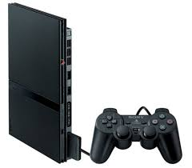
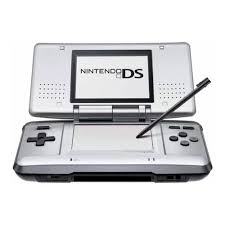
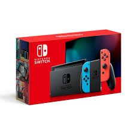
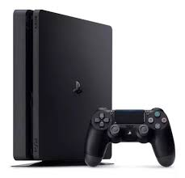

Consolas de videojuegos mas vendidas en toda la historia
Los videojuegos son una parte importante de la cultura popular y estan presentes a diario en la vida de muchas personas asi que en este articulo veremos el top 5 de consolas mas vendidas en toda la historia.
TOP
- PlayStation 2 -160 millones 
- Nintendo DS -154,02 millones 
- Nintendo switch -139,36 millones 
- Game Boy -118,69 millones
- PlayStation 4 -117,2 millones 